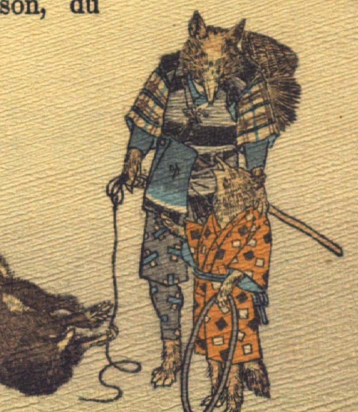

狐。着物と袖なし羽織、袴を着て、左前脚に斧を持ち、藁笠を肩にかけ、樵のような扮装をしている。右前脚に縄を持ち、それで狸を縛ろうとしているように見える。下を向き、子狐と話をしている。
著作者：J.Dautremer／出典：親書誌：U426_nichibunken_0120：La victoire du petit renard／日付：2006／資源識別子：U426_nichibunken_0120_0004_0002
Copyright (c)2010- International Research Center for Japanese Studies, Kyoto, Japan. All rights reserved.